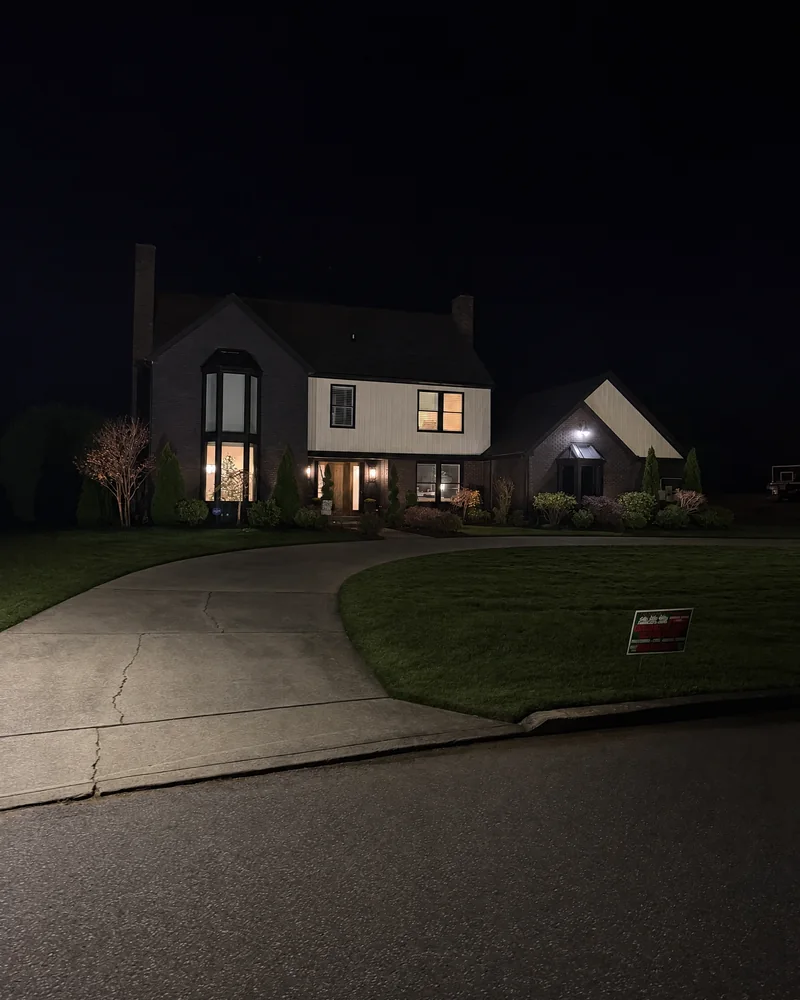
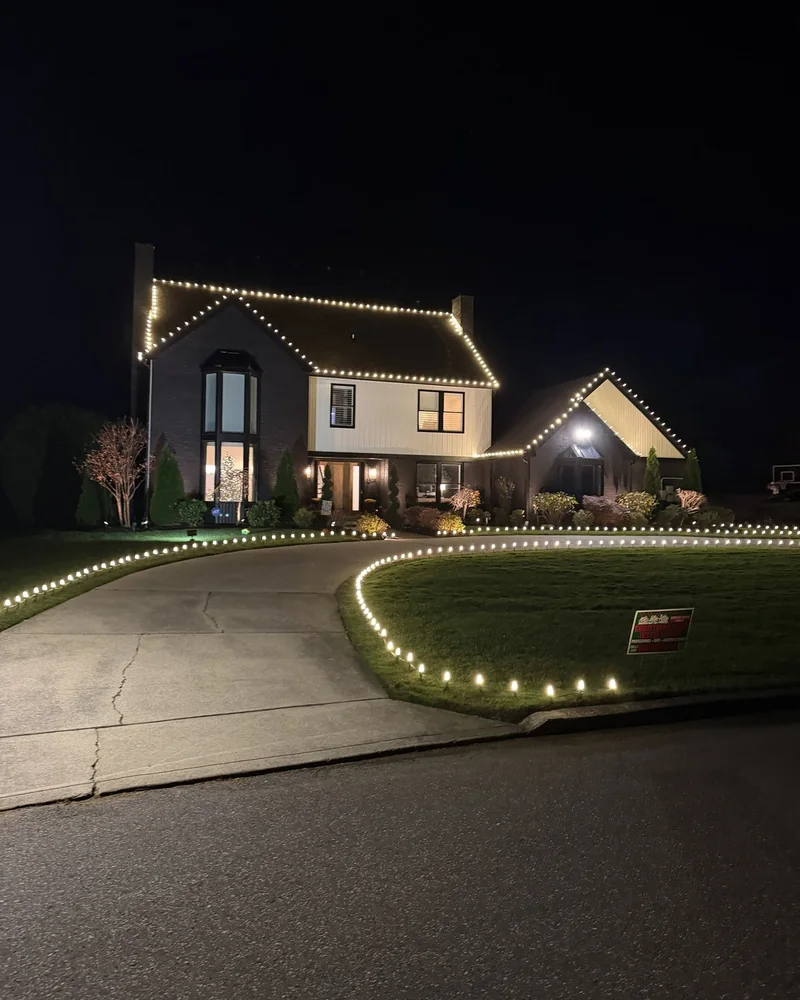

Checking hours…
5.0
·
360 Google reviews
Countdown to Christmas
Install dates book up fast every year. Reserve yours before the calendar fills.
--days
--hours
--min
--sec
See the Jolly Difference
Scroll or drag to flip the lights on


Before After Roofline & Curved Drive Drag to turn the lights onFresh Off the Ladder
Another South Jersey home, ready for the holidays
What We Decorate
Tap a service and we’ll text you back with details
How It Works
Four simple steps to your brightest Christmas yet
1
Request a free quote
Tell us about your home or text us a photo.
2
We design your display
Pick your colors and where you want the glow.
3
Our crew installs everything
No ladders, no tangled cords, no frozen fingers.
4
Enjoy the season
And when it's over, we come back to take it down.
Be the Brightest House on the Block
Custom-designed Christmas lights, installed by our crew and taken down after the holidays. You enjoy the glow — we handle the ladders.
Ho ho ho!
My sleigh's busy this year — let The Jolly Washer light up your home for Christmas!
My sleigh's busy this year — let The Jolly Washer light up your home for Christmas!
Follow Our Work
@thejollywasher
Every Line, Every Bulb
Rooflines, dormers and entryways — lit with precision
Don't Get Left in the Dark
Spots on our install schedule go fast. Lock yours in now and make this your brightest Christmas yet.